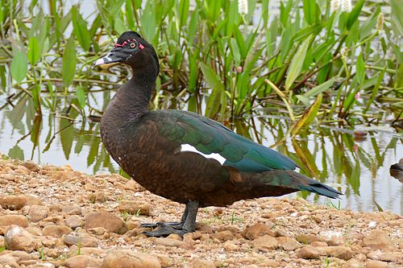

Descripción
El pato real, conocido también como pato criollo, bragado, o pato negro. Esta especie está considerada dentro de un grupo de patos conocidos en términos generales como patos de percha,
dentro de la tribu Cairinini. Este grupo de patos (tribu) está integrado por nueve géneros y trece especies a nivel mundial. Estos patos comparten las características de poseer las
patas proyectadas más hacia el frente con respecto a la base del cuerpo, que los patos del género Anas, tienen garras fuertes y filosas, dedos traseros bien desarrollados y alas amplias.
Cairina moschata es un pato Neotropical grande, similar en tamaño a un ganso. El tamaño es de 66 a 86.5 cm con peso promedio en machos de 2 a 4 kg y en hembras de 1 a 1.5 kg y de cola
larga, el macho es considerablemente más grande que la hembra pero el plumaje es similar en ambos sexos. La coloración del plumaje va de un café-negruzco a negro y posee una iridiscencia
en matices verdes a morados o púrpuras en la parte superior. Sus hombros y la cara inferior de las alas son de color blanco. Los machos presentan carúnculos carnosos en torno al pico y
en ocasiones en la parte posterior del ojo, el pico es de tonalidad rosada, el rostro carece de plumaje y es de coloración negruzca al igual que la coloración de las patas. En las
hembras la región del rostro sin plumaje es más reducida y no presentan los carúnculos. Los viejos de la especie desarrollan una cresta. Formas domesticadas de esta especie presentan
coloraciones negra, blanca, negra y blanca y verde y blanca.
De manera general, estas especies mantienen una dieta bastante amplia, se alimentan de diferentes tipos de semillas, granos, plantas acuáticas, organismos acuáticos, e inclusive peces
pequeños y crustáceos.

Hábitat
Su hábitat típico corresponde al de los sitios arbolados con suficiente agua dulce, preferentemente en humedales, lagunas, o en cercanías de arroyos o ríos de corriente lenta.
En tales zonas se les suele encontrar posados sobre las ramas de los árboles próximos a los espejos o corrientes de agua. La subespecie doméstica vive además en climas templados
y sin los requisitos de tanta humedad o arbolado.
Situación actual
Chordata: Son un filo del reino animal caracterizado por la presencia de una cuerda dorsal o notocorda. Anseriformes: Orden de aves neognatas que comprende 162 especies repartidas en tres familias: los Anhimidae, Anseranatidae y los Anatidae. Anatidae: Familia de aves del orden de las Anseriformes.